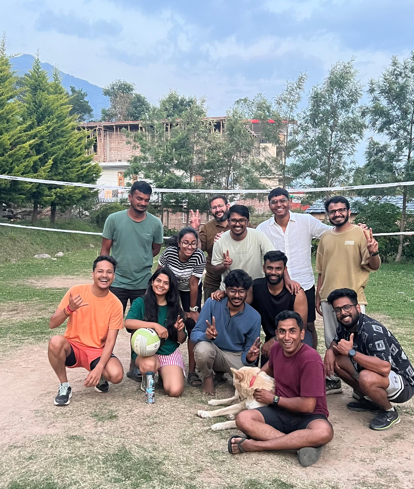

Home Blog Flow Cooking Let's connect
Alt Space is five dimensional
18th May, 2026
My friend Aravind visited Alt Space thrice now. And not just him, many visit Alt Space multiple times.
When I got to know this, I wondered why would someone visit the same place again and again.
This year, I’ve been to Alt Space and found the answer.
Alt Space is five dimensional — Length, breadth, height, time, and people. Though the first three mostly remain the same, time and people make every visit feel new.
When someone asks me how Alt Space is, I won’t just describe the place. I’ll also describe the time I was there and the people I met.
So I’d say something like this: Alt Space in 2026 was a snow-covered mountain view. It was a starry night. It was greenery all around. It was birds chirping all day. And it was people — amazing, kind people! ❤️
In 2027, it might be different. Different people. Different memories. But I’m sure it’ll be beautiful too.
On that note, I’ve decided to visit Alt Space again. And again. And again. Because it’s more than just a place, it’s people too! 🫶
See you again, Alt Space!
Signing off,
Sreekar.
P.S. Inspired by Derek Sivers’ article: Geography is four-dimensional.
